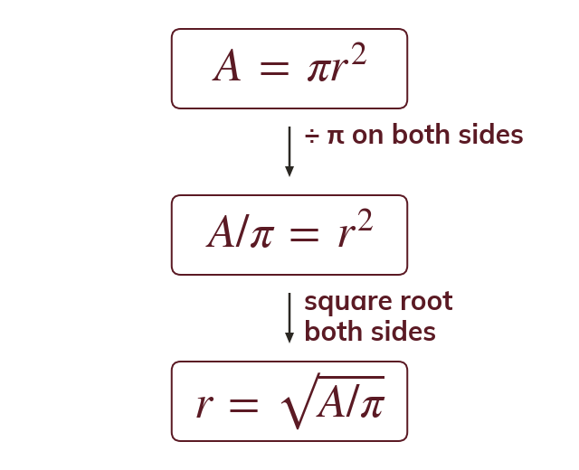
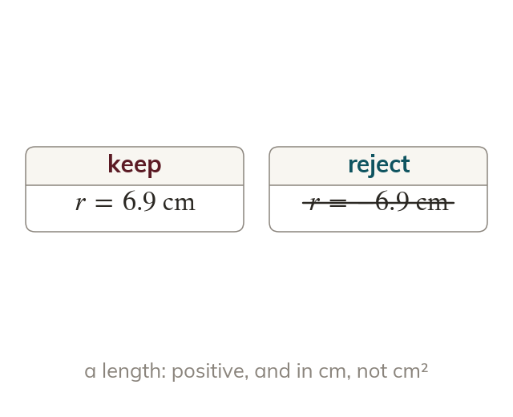
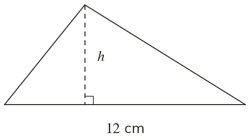
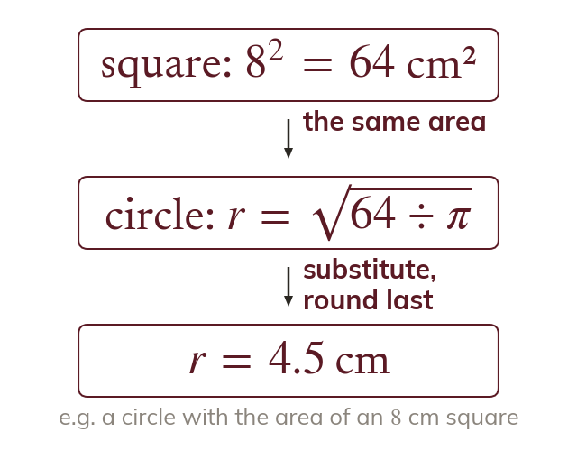
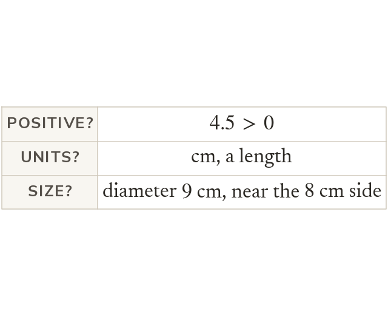
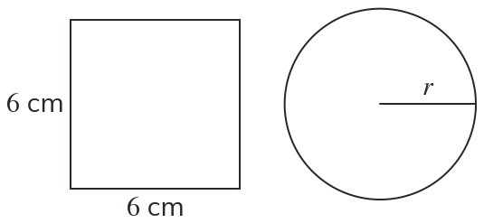

Any variable can be the subject
A shape formula can be rearranged to make any of its variables the subject. becomes , dividing by π before taking the root.
An architect often knows the area or the volume a design needs and must work out a length. Rearranging a shape formula turns it into a formula for that missing length.
Work down the page at your own pace. Write every answer in your book first, then click to check it.
Read each card, then follow the worked examples one step at a time.

A shape formula can be rearranged to make any of its variables the subject. becomes , dividing by π before taking the root.

A length takes only the positive root. A length found from an area is in cm, not cm²
Pick an answer. If it's wrong, the feedback tells you which mistake it was.

Read each card, then follow the worked examples one step at a time.

One formula can feed a value into a second one. Rearrange before substituting to keep values exact.

The answer is checked against the context. It should be a positive length, in the right units and of a sensible size.
Pick an answer. If it's wrong, the feedback tells you which mistake it was.

Finished? Next lesson: 8.11.1 Finding the Hypotenuse.
Log in, then search for a code to practise that skill.
Videos, worksheets and more on each part of this lesson.